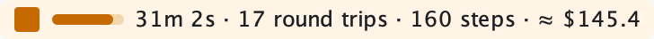
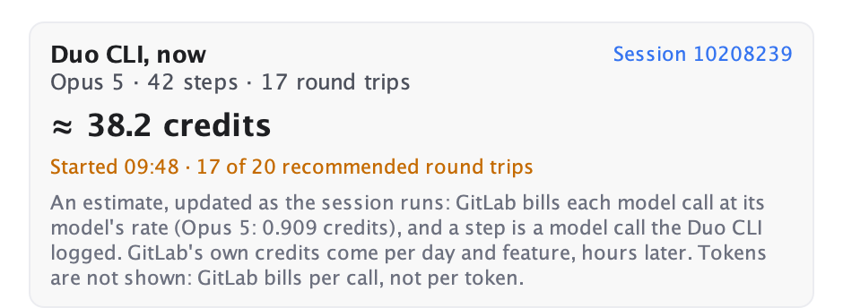
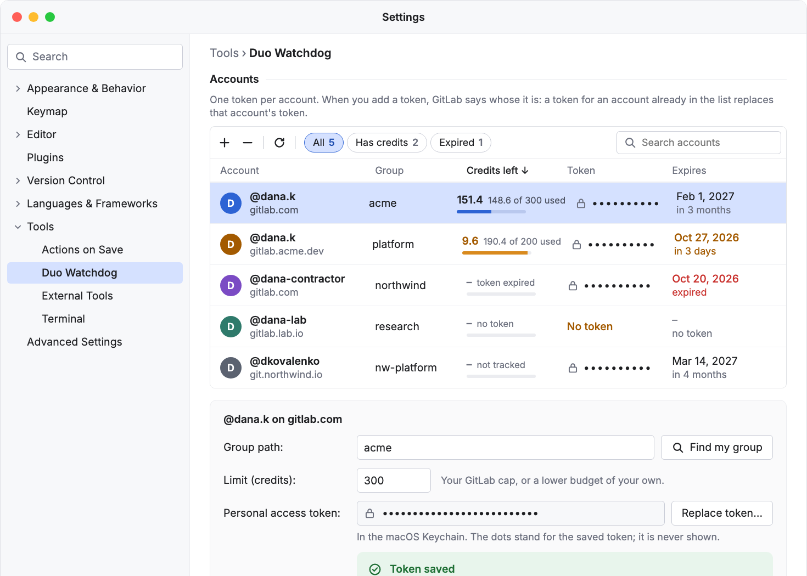
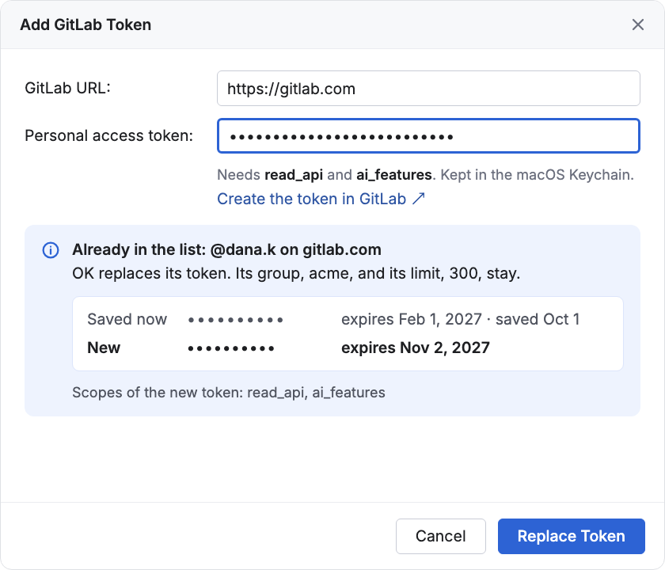
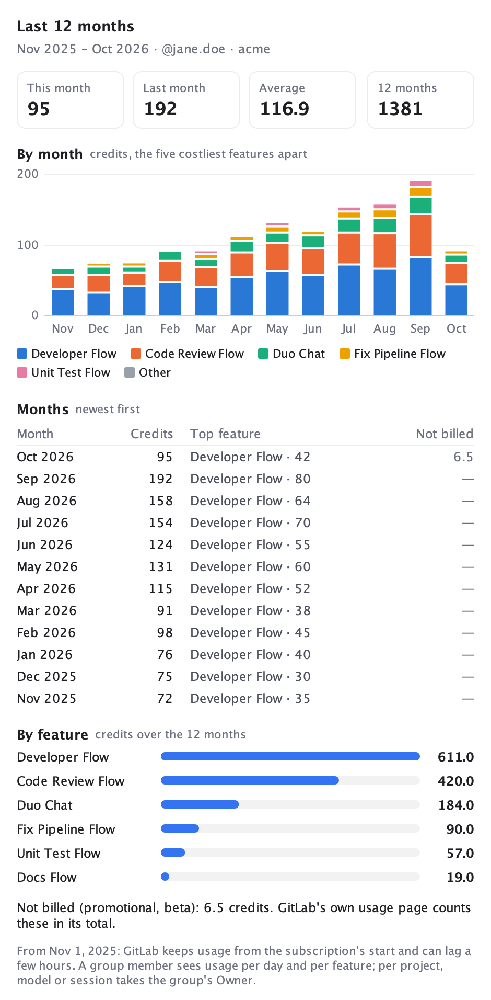
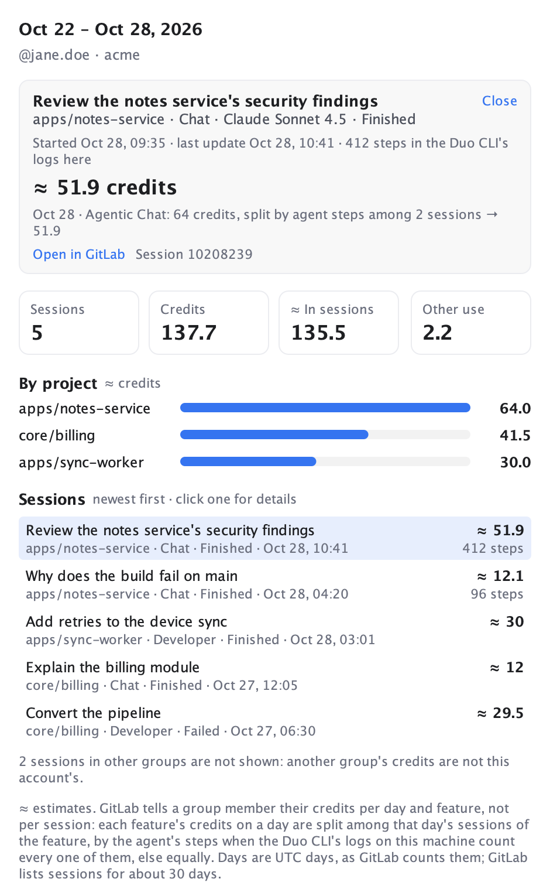
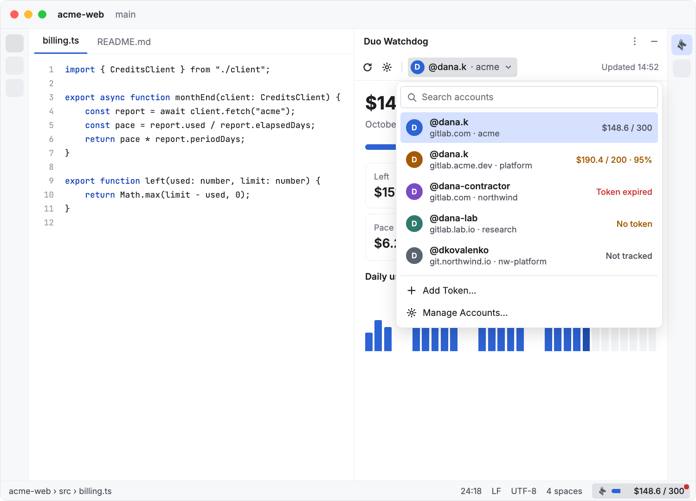
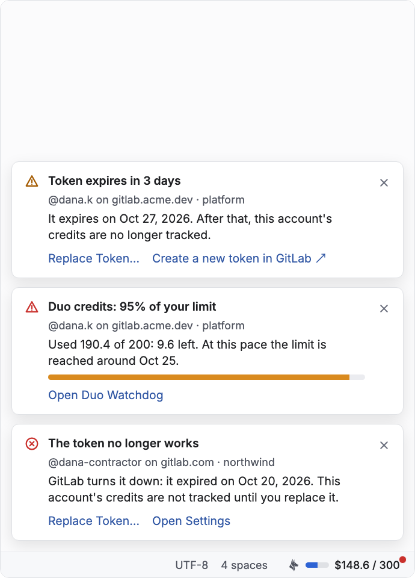
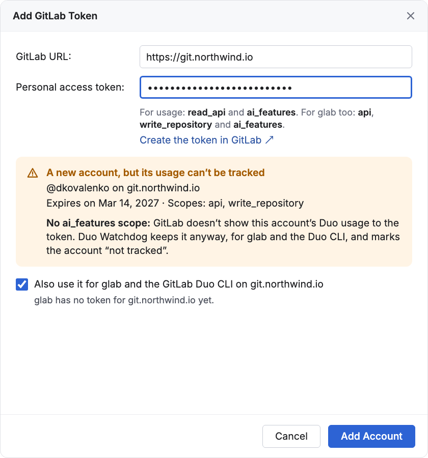

The session of the interactive Duo CLI (9.30) now counts its round trips, one per prompt, and shows before its first tool call; a session on the group's default model says Group default. Below, what 0.5.0 brought.
The pictures of the IntelliJ IDEA screens come from their design; the Duo CLI and Statistics ones are the real views.
While duo runs a session, a small item beside the credits in the status bar shows how long it has run, its round trips (the prompts you sent), its steps (the model calls) and its ≈ credits, each step at its model's credits per call. It changes within seconds of each step. Its mini meter fills toward the round trips recommended per session, 20 unless you set another in Settings: amber from 80% of it, red at it. The tooltip says the model and when the session started; a click opens Sessions, which starts with the same session.


It is read from the log the CLI writes as it goes: only its steps, the lines that send a prompt (the prompt itself is not read) and the model. Tokens are not shown: GitLab bills each model call at its model's rate, not per token.
A week before an account's token expires, GitLab replaces it with a new one that lives as long; Duo Watchdog saves it, hands it to glab, and the notice copies it for wherever else you use it. It is on by default and needs the api or self_rotate scope. Each account says when its token rotates, or why it won't.
An account is one GitLab user on one GitLab. When you add a token, GitLab says whose it is: a token for an account already in the list replaces that account's token, and its group and limit stay. The list puts the most credits left first, shows when each token expires, and has the filters All, Has credits and Expired and a search. A saved token shows as dots, a missing one as an empty field; the token itself is never shown.

As soon as a token is pasted, the dialog says whether it adds an account or replaces a token. A token GitLab takes but that cannot read usage (no ai_features scope) is still added, as not tracked.

A new Statistics tab next to the dashboard, for the last 3, 6 or 12 months: this month, last month, the monthly average and the total; a bar a month split by feature; every month as a row; the features over the range; and the credits GitLab did not bill. Show one account, or all of them added up. Months that are over are kept, so GitLab is asked only about the current one.

A Sessions tab lists your Agent Platform sessions over the days you pick, each with its credits, estimated: GitLab gives a group member credits per day and feature, so a feature's credits on a day are split among that day's sessions of it, by the agent's steps where the Duo CLI's logs on this machine count them. Paste a session ID or link to see it, or press Last Session.

Pick the account in the switcher next to Refresh; type to filter. The status bar follows it, a dot on its meter says another account needs a look, and the tooltip lists them all.


Each account can hand its token to glab for its GitLab, and so to the GitLab Duo CLI, which signs in through glab. Both are off until you tick them. glab keeps one token per GitLab, so it follows the account you pick.

Upgrading from 0.3.0 moved your saved token to its account, with its group, limit and last alert.